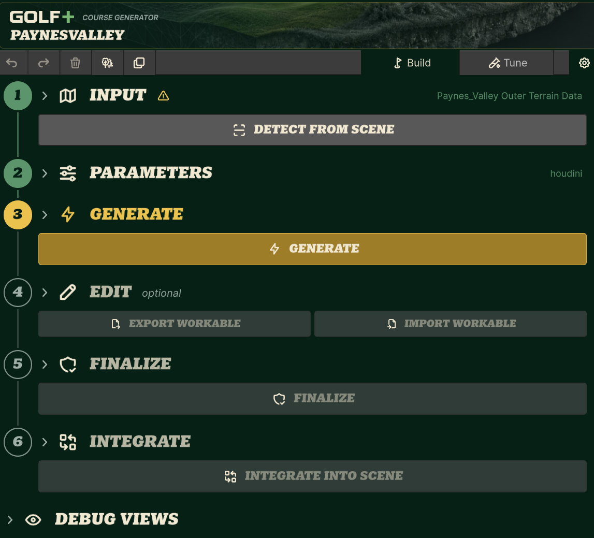

Instructor-provided production example
GOLF+ Course Generator: read the workflow before running it
The supplied image supports a complete visual-design explanation: sequence, emphasis, optional detail and consistency. Use it as a worked example, then ask which behavior would need a test.


What students can inspect
- Sequence: Input → Parameters → Generate → optional Edit → Finalize → Integrate. Numbered markers give the artist a process to follow.
- Emphasis: Generate has the strongest gold treatment in this state. The stage marker, heading and large action reinforce the same focal point.
- Grouping: controls sit inside stages. Parameters and Debug Views can be collapsed, while Edit is explicitly optional.
- Shared visual language: repeated display type, icon treatment, alignment and stage markers make the tool coherent. Full-width buttons fit this sequential panel.
A useful critique question
What does the Input warning mean, and can the artist safely proceed? The visible frame does not answer this. Inspect the actual warning explanation and action behavior before assigning a cause.
Keep observation separate from inference
| Visible here | Needs more evidence |
|---|---|
| Gold Generate, muted later controls, filled earlier markers. | Whether actions are enabled, steps are completed, or prerequisites are valid. |
| A warning icon beside Input. | Its cause, severity, explanation, keyboard access and effect on generation. |
| Collapsed groups, optional Edit, a Debug Views section. | Whether artists find the necessary setting and recover from mistakes. |
| Strong branding and compact secondary text. | Projection readability, actual contrast pairs, focus visibility and supported scaling. |
A concrete style-sheet maintenance example
The earlier playbook described Detect → Generate → Finalize → Adopt. This screenshot visibly uses six stages and ends with Integrate. These may reflect a deliberate evolution or different scope; the image does not establish which. Teach the maintenance task: check the intended vocabulary, update the shared specification, then verify affected controls and examples.
How this carries the lecture
Show the full image to explain sequence. Revisit the same example for emphasis and semantic roles. Put the observation and principle directly on each slide; keep the fuller process story in narration. The lesson works without generating a course live. A colleague’s demonstration can later supply behavior, implementation detail and questions.
For a future Unity capture, request only the missing evidence: expanded Input warning, expanded Parameters, an action in progress, and a completed or recoverable-failure state for one prepared task. These are proposed captures, not existing results. No new Unity session was run for this revision.
Provenance record · Other visuals and references
Week 7 · prepared 15 October 2026 · local instructor review · current slide numbers refer to v15; lettered IDs are proposed insertions.